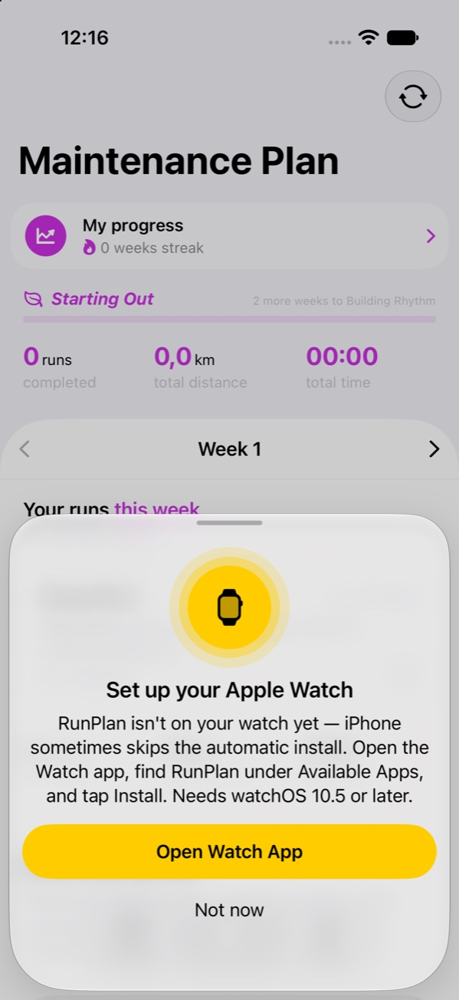

Four out of five never reach the watch
A focused case inside RunPlan. Our funnel looked healthy until I lined up the events: most people who build a plan never start it on the Apple Watch. I found out why and rebuilt the hand-off.
Overview
RunPlan is watch-first: the plan is built on the iPhone, the run happens on the Apple Watch. In November 2026 I went through our analytics to see where people drop out. Onboarding was fine. The gap sat between the two devices, and part of it was our own interface saying something that was not true.
Firebase Analytics. Funnel: 90 days to 17 November 2026. Watch states: the last 28 of those days.
The signal
By autumn the first-run flow looked healthy: almost everyone finished onboarding and built a plan. So I lined up five events for the last 90 days, from the first open to a finished run.
From first open to a finished run
Share of the people who opened the app, 20 August – 17 November 2026
On the iPhone
- Opened the app100%
- Finished onboarding96%
- Created a plan93%
On the Apple Watch four in five drop out here
- Started a workout20%
- Finished a workout15%
Firebase Analytics. Unique people per event in the same 90 days, not a strict cohort, so read the bars as proportions.
Nine in ten people build a plan. Only 21% of them start a workout on the watch. In a watch-first app the run on the watch is the product, and everything I had polished sat on the healthy side of that gap.
The cause
A funnel shows where people leave, not why. In August I had added one property to our analytics: what the iPhone finds on the wrist. It has three values: RunPlan is on the watch, a watch is paired but RunPlan isn't on it, or there is no watch. Four weeks of it gave the answer.
What the iPhone found on the wrist
Share of active users, 21 October – 17 November 2026
- RunPlan is on the watch 55%
- Apple Watch paired, but RunPlan isn't installed on it 22%
- No Apple Watch paired 22%
Firebase Analytics. The middle group is the one a better interface can win back.
The middle group hurt the most. They own the watch, and three in four of them built a plan anyway. iOS usually installs the watch app together with the iPhone app, but sometimes it doesn't, and nothing on the phone says so. With RunPlan on the watch, 36% of people started a workout in those four weeks. Without it, 1% did.
What the app was telling them
Then I checked what these people saw on screen. Two things.
- A setup prompt at launch. My co-founder built it in July: when a paired watch has no RunPlan, a sheet explains how to install it, at most once a day. Dismiss it on the way to your plan, and it appeared nowhere else.
- A sync button that always said yes. Sync with Apple Watch on the plan screen spun for two seconds and answered "Synced with Watch" every time, whether or not anything was there to receive the plan. Almost half of the people with a watch but no RunPlan tapped it and were told it worked.
So at the one moment a runner asked the app whether the plan was on the watch, the app said yes. Nobody had designed the failure, so success was the only answer the button had.
The redesign
The rule I set for the flow: a status message is a claim, so the app may only say what it has checked. After the spinner the button now reads the real state of the watch, and each state gets its own answer.
| What the phone sees | Before | Now |
|---|---|---|
| RunPlan is on the watch | "Synced with Watch" | "Synced with Watch", and the plan really is there. |
| Watch paired, RunPlan not on it | "Synced with Watch", which was not true | A sheet titled "Couldn't sync your plan": how to install RunPlan from the Watch app, with an Open Watch App button. |
| No watch paired | "Synced with Watch", which was not true | The same sheet, saying that no Apple Watch is paired and how to pair one. |
| Can't tell yet | "Synced with Watch" | The spinner stops and the app claims nothing. |
One sheet, three ways in
The setup sheet already existed. I gave it more ways in and a title that fits the moment. At launch it still says "Set up your Apple Watch". After a sync tap it says "Couldn't sync your plan", because that answers the question the runner has just asked.


The sheet as shipped, in the iPhone simulator. Left: the July prompt with its install steps. Right: the new title and the new no-watch message. After a sync tap with a watch that has no RunPlan, the sheet shows the install steps under the title "Couldn't sync your plan".
- It can be found later. The Apple Watch row in Settings now reads "App not installed" or "No watch paired" and opens the same sheet.
- The plan follows on its own. Before, a plan sent to a watch without RunPlan went nowhere and waited for the next edit. Now the phone sends the active plan the moment RunPlan appears on the watch.
I designed the flow, wrote the two new messages and built it in SwiftUI. It is live in all nine languages of the app, and I tried it on an iPhone with an Apple Watch before it went out.
How we will know
The fix ships with its own measurement. Two new events record every time the sheet appears and every tap on Open Watch App, each with where it came from (launch, sync or Settings) and why (no app or no watch). Three numbers to read once the fix has been live for four weeks:
| What I will read | Today | Source |
|---|---|---|
| People who see the sheet and tap Open Watch App | No baseline, the events are new | watch_setup_shown watch_setup_open_tapped |
| Active users with a watch but no RunPlan on it | 22% | Watch state, four weeks |
| Plan creators who start a workout on the watch | 21% | Funnel, 90 days |
Status: no result yet
The fix shipped on 24 November 2026, so there is nothing to report yet. Once it has been live for four weeks I will read the three numbers above.
One question stays open: the 22% with no Apple Watch at all. Either we say earlier and more clearly that RunPlan needs one, or we give them a way to run from the phone. We have not decided.
The same pass through the data turned up a quieter bug. Our App Store rating prompt had not appeared once in 90 days, although runners finished workouts on the watch all that time: it only counted runs it had marked complete itself, and a watch run arrives already complete. Fixed in the same release.
What I learned
- A healthy funnel can hide the product. 93% creating a plan told me onboarding worked. It said nothing about the one step everything depends on: getting onto the wrist.
- A success message is a claim. The button never lied on purpose. Nobody had designed what it should say when it failed. I now design the failure states before the success state.
- The hand-off between devices is a screen of its own. It has no canvas in Figma, so it was nobody's job. Now it is designed, worded and measured like any other screen.